Europe has been traditionally divided into regions based on location according to the four points of the compass: Eastern Europe, southern Europe, Western Europe, and northern Europe. The British Isles are often considered a separate region but can be included as a part of Western Europe. These regions are purely geographical regions that may share similar physical geography or cultural traits based on physical geographical demands. For historical political purposes, Europe is divided into the two regions of Western Europe and Eastern Europe. In this case, the region of Western Europe includes the regions of northern Europe, southern Europe, Central Europe, and the British Isles. Eastern Europe is everything east of Germany, Austria, and Italy. These regional labels are used more for identification than for regional analysis. They serve as traditional labels of geographic location.
Figure 2.16 Traditional Regions of Europe
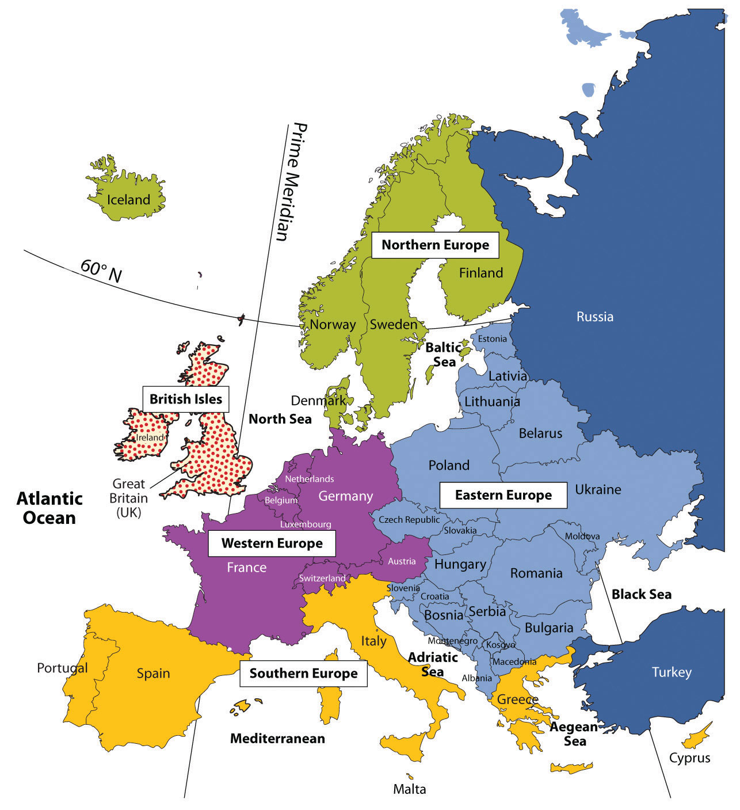The traditional regions of Europe are not as relevant today as they have been historically with the creation of the European Union (EU). Economic and political relationships are more integrated than they were in past eras when nation-states and empires were more significant. Economic conditions have often superseded cultural factors and have intensified the need for increased integration. Cultural forces have traditionally supported nationalistic movements that work to preserve the culture, heritage, and traditions of a people. Regional cultural differences remain the social fabric of local communities that support the retention of their identity. Modern transportation and communication technology has brought this cornucopia of European identities into one single sphere of global recognition.
Europe has many different cultural identities within its continent. Northern Europe has traditionally included Iceland, Finland, and the three Scandinavian countries of Norway, Sweden, and Denmark. These countries are often referred to as the Nordic countries. All these countries were influenced by Viking heritage and expansion. Their capital cities are also major ports, and the largest cities of each country are their primate cities. The languages of the three Scandinavian countries are from the Germanic language group and are mutually intelligible. Finnish is not an Indo-European language but is instead from the Uralic language family. Most of Iceland’s inhabitants are descendents of Scandinavian Vikings. Protestant Christianity has prevailed in northern Europe since about 1000 CE. The Lutheran Church has traditionally been the state church until recent years. These countries were kingdoms, and their royal families remain highly regarded members of society. The colder northern climate has helped shape the cultural activities and the winter sports that are part of the region’s heritage. Peripheral isolation from the rest of Europe because of their northern location and dividing bodies of water have allowed the northern culture to be preserved for centuries and shape the societies that now exist in northern Europe.
Figure 2.17 Port in Stockholm, Sweden
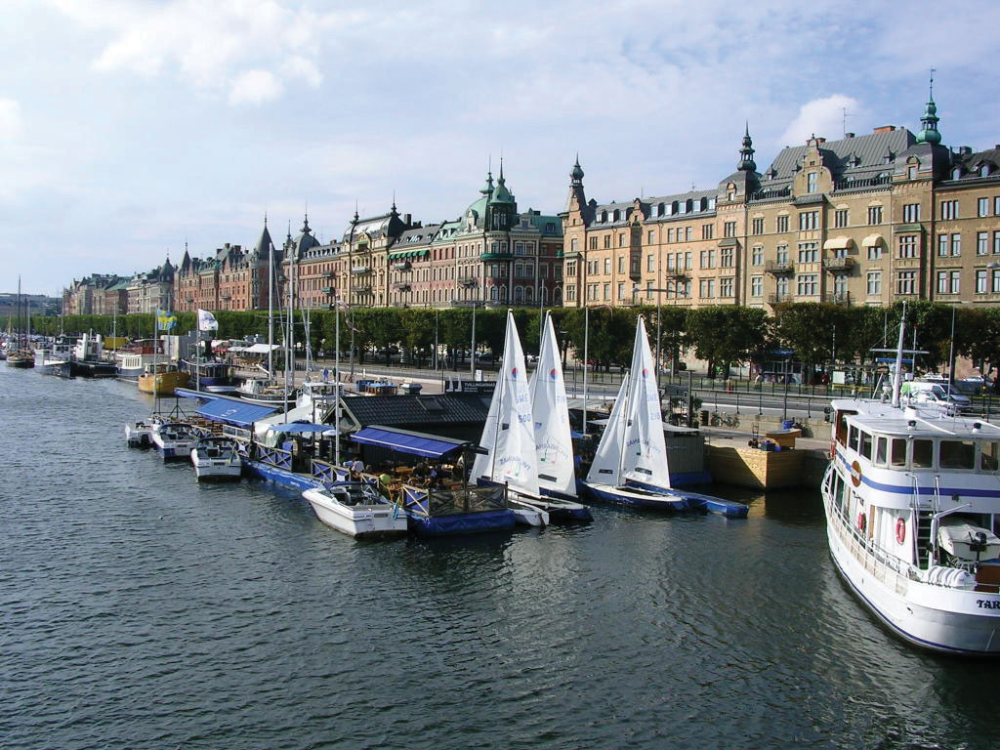Source: Photo courtesy of Condor Patagónico, http://commons.wikimedia.org/wiki/File:Stockholm_Port.jpg.
Human rights, education, and social concerns are high priorities of the governments of northern Europe, and the quality of these elements rank highly by global comparisons. Standards of living are among the highest in Europe. Isolation in northern Europe does create an element of economic cost, and transportation technology has been leveraged to address this. A modern bridge has been constructed across the Baltic Sea from Denmark to Sweden to increase the flow of people, goods, and materials between the Scandinavian Peninsula and mainland Europe. Iceland is the most remote of the Nordic countries. Its small population—less than a half million people—is connected to Europe by sea and air transportation and communication technologies. Almost all elementary school children in the Nordic countries are taught English as a second language. Fish, meat, and potatoes are traditional dietary staples; fish in particular has been an important food source. The cuisine of the region is not noted for being spicy. Northern Europe has worked diligently to integrate itself with the global community and yet maintain its cultural identity.
As a standard practice, the northern European countries have exploited the opportunities and advantages of their natural resources to expand their economies. Sweden, northern Europe’s largest country, has used its natural iron ore supply to develop its manufacturing sector. Sweden was the production base of Saab and Volvo vehicles as well as other high-tech products; however, GM purchased the Saab auto division in 2000 and some of its automobiles were manufactured in Mexico. In 2010, Saab was sold back to European investors and production resumed in Sweden. Volvo Car Corporation was purchased by Ford Motor Corporation in 1999 and then acquired by a Chinese automaker in 2010.
Finland has vast timber resources and is one of Europe’s major sources of processed lumber. It was the original manufacturer of Nokia cell phones, an example of its technological advancements. Nokia is the largest manufacturer of mobile phones in the world and has production facilities in eight different countries.
Norway has been benefiting from the enormous oil and natural gas reserves under the North Sea. Fishing and modest agricultural activities had been Norway’s traditional means of gaining wealth, but now it is the export of the much-in-demand energy resources. Because of its economic and energy independence, Norway has opted not to join the EU.
Vikings were masters of the seas and colonized Greenland, which is located next to Canada and is considered to be the world’s largest island. Danish colonization in the eighteenth century included Greenland and the Faeroe Islands, which are located between Scotland and Iceland. Both are now under the government of Denmark but retain a high level of self-rule and autonomy, which has aided them in holding on to their cultural identity. Greenland has also opted not to become a part of the EU even though Denmark is a member. Greenland only had a population of about 57,670 in 2011, and 80 percent of its surface is covered with ice. Fish is Greenland’s main export, but minerals, diamonds, and gold are also present in viable amounts.
Denmark has a consumer economy with a high standard of living. This Scandinavian country is often ranked as the least corrupt country in the world and has the happiest people. The country has supported a positive environment and implemented strong measures to protect its natural areas. Denmark’s main exports are food products and energy. The country has sizeable oil resources in the North Sea but also receives over 15 percent of its electricity from wind turbines.
The Baltic states of Lithuania, Latvia, and Estonia have often been included in the northern European designation because of their northern location. Estonia has the strongest similarities in religion, traditions, and culture, and geographic literature often has included it as a part of northern Europe. The Baltic states have been associated with Eastern Europe through the Soviet era but, like their neighbors to the north, are becoming more economically integrated with Western Europe.
Northern Europe is a peripheral region. Southern Sweden has an advanced industrial base and resembles a core area. Sweden’s northern portion and the main parts of the other Nordic countries act as sources of raw materials for Europe’s urban core industrial region. In the core-peripheral spatial relationship, northern Europe most resembles a semiperipheral region that has attributes of both the urban core and the rural periphery.
Norway, Sweden, and Finland are quite large in area but are not densely populated compared with other European nations. Sweden ranks as the fourth-largest European country in physical area. Sweden is larger than the US state of California, but in the 2010 census, it had less than ten million people. In 2010, Finland, Norway, and Denmark all had less than six million people each.
The cultures and societies of northern Europe have progressed along similar paths; that is, they have advanced from once Viking-dominated lands into modern democratic and socially mature nations. Northern Europe is known for its concern for the social welfare of its citizens. Their strong egalitarian ideals have contributed to extensive advancements in free medical care, free education, and free social services for all, regardless of nationality or minority status. Civil rights for minorities, women, and other groups is assured and protected. Denmark doesn’t have a legal age for consumption of alcoholic beverages, though tradition sets the age at about fourteen. Culture and the arts are well developed; examples include everything from the Nobel Peace Prize to Hans Christian Anderson to the 1970s chart-topping pop group ABBA. Sweden has become a major exporter of music worldwide. Rock, hip-hop, and pop music are common genres. With English as a widely spoken language in Scandinavia, music and cultural trends have a larger export market in places such as the United States and Britain.
Southern Europe includes three large peninsulas that extend into the Mediterranean Sea and the Atlantic Ocean. The Iberian Peninsula consists of Spain and Portugal. The Pyrenees mountain range separates the Iberian Peninsula from France. Greece, the most southern country on the Balkan Peninsula, includes hundreds of surrounding islands and the large island of Crete. The Italian Peninsula is the shape of a boot with the Apennine Mountains running down its center. Italy also includes the islands of Sicily and Sardinia. Technically, the island country of Cyprus is also included in southern Europe. There are five ministates in this region. The small island of Malta is located to the south of Sicily and is an independent country. Monaco, San Marino, Andorra, and Vatican City are also independent states located within the region. Southern Europe’s type C climate, moderated by the water that surrounds it, is often referred to as a Mediterranean climate, which has mild, wet winters and hot, dry summers.
Rural-to-urban shift in southern Europe has not been as strong as that of Western Europe. Only about 50 percent of the people in Portugal are urban; in Spain and Greece, about 60 percent are urban.
Italy is more representative of Europe, with about 68 percent of the population urbanized. Italy is also divided, with northern Italy being more industrialized than southern Italy. The southern regions of Italy, including the island of Sicily, are more rural with fewer industries. Northern Italy has the metropolitan city of Milan as an anchor for its global industrial and financial sector in the Lombardy region, which includes the city of Turin and the port of Genoa. This northern region of Italy has the economic muscle to be one of Europe’s leading manufacturing centers. The so-called Ancona LineAn imaginary line that cuts across Italy from Rome to Ancona and divides Italy into northern Italy and southern Italy. can be drawn across the middle of Italy from Ancona on the east coast to Rome on the west coast to separate the industrial north with the more agrarian south. The north also has the noted cultural cities of Venice, Florence, and Pisa.
A similar situation exists in Spain. The urbanized Catalonia region around Barcelona in the northeast has high-tech industries and a high standard of living. Southern Spain has large rural areas with economies heavily based on agricultural production. Portugal and Greece are not as industrialized and do not have the same economic opportunities. Historically, southern Europe, Portugal, and Greece in particular each have had a much lower gross domestic product (GDP) per capita than northern or Central Europe. Their economies have been much more aligned with the economic periphery than with the industrial core region of Europe. Greece has had serious economic difficulty in the past few years.
Southern European countries have much larger populations than their northern European counterparts. Italy has about sixty million people in an area smaller than Norway, which has less than five million. Spain has about forty million; both Portugal and Greece have more than ten million. Cultural factors are also different here than in northern Europe. The culture of southern Europe has been built around agriculture. Traditional cuisine is based on locally grown fresh food and wine. Olive oil and wine have been major agricultural exports. The main languages of Iberia and Italy are based on the Romance language group, and Greek is an independent branch of the Indo-European language family. The most dominant religious affiliation in the south is Roman Catholicism, except in Greece, where the Eastern (Greek) Orthodox Church is prominent.
Figure 2.18 Spain’s Autonomous Communities
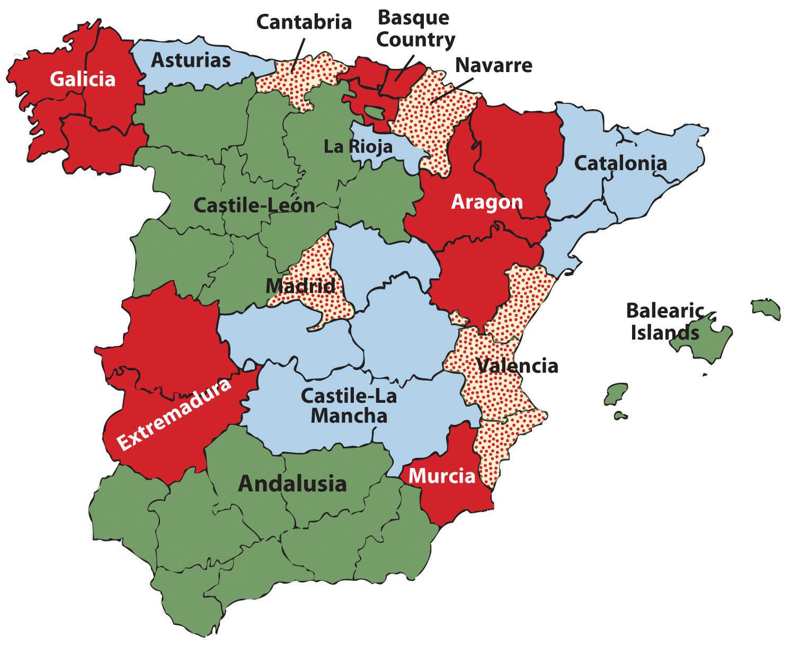Because of its diversity, Spain is not categorized as a nation-state.
Spain is the most diverse nation in southern Europe with a number of distinct ethnic groups. The Basques in the north along the French border would like to separate and create their own nation-state. The region of Galicia in northwest Spain is an autonomous region and was once a kingdom unto itself. There are many other autonomous communities in Spain, each with its own distinct heritage and culture. Farther east in the Mediterranean is the island state of Cyprus, which is divided by Greek and Turkish ethnic groups. The southern part of the island is dominated by Greek heritage and culture, and the northern part of the island is dominated by Turkish culture and traditions. Islam is the main religion of the Turkish north. The people of southern Europe are diverse and hold to many different traditions but are tied together by the sea and the land, which create similar lifestyles and economic activities.
Italy has a population of about sixty million people, with about 68 percent living in cities. Italian culture balances the food and lifestyle of the rural countryside with the history and heritage of the cities. Cultural regions such as Tuscany, along the northwest coast, or Sicily, the island to the south, evoke thoughts of Italian heritage and culture. The large cities of Italy each have their own draw and persona that emulates the nation’s heritage and history. Italy has four cities with population estimates of over one million people each, and a number of others are major cultural centers. The metropolitan areas around these cities can be extensive.
Table 2.2 Major Italian Cities
| Rank by Population | Population Estimate |
|---|---|
| 1. Rome (capital) | 3.357 million |
| 2. Milan | 2.962 million |
| 3. Naples | 2.27 million |
| 4. Turin (Torino) | 1.662 million |
| 5. Palermo | 872,000 |
| 8. Florence | 381,762 |
| 13. Venice | 297,743 |
| Population is for city only and not for metropolitan area. | |
Rome, Italy’s capital and its largest city, was at the center of the Roman Empire and has a significant historical connection to the culture and heritage of Italy. Rome is also home to Vatican City, which holds a separate political identity. The Vatican City is home to the pope, who is the head of the Roman Catholic Church. Rome provides a historical and political center for the nation of Italy and is located along the Ancona Line, which distinguishes northern Italy from southern Italy.
The northern city of Milan is a core industrial center for the nation and for Europe. With a large metropolitan area, the city of Milan has a long history as a center of industry and power. The city continues to hold its powerful status and has expanded its international reach into the world of high-end fashion and the arts.
Naples is located along the west coast to the south of Rome. Founded by the Greeks as a colony, Naples was transferred to the Roman Empire. This historic city is home to many artistic, musical, and cultural activities that emulate the heritage of the Italian people from the time of the Renaissance.
Figure 2.19
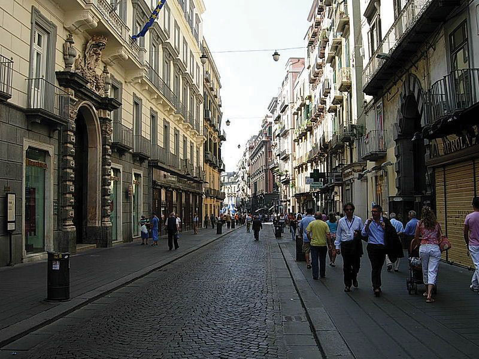The central part of the city of Naples, Italy, is a UNESCO World Heritage Site. Italy is densely populated with many historical cities emulating the culture and traditions of each part of the country.
Source: Photo courtesy of Inviaggiocommons, http://commons.wikimedia.org/wiki/File:Via_Toledo1.jpg.
The industrial city of Turin (Torino) is located in northwest Italy in the Alpine region on the banks of the Po River. Turin is second only to Milan in its industrial capacity within Italy. Automobile manufacturing as well as prestigious universities, art galleries, and cultural centers can be found here. The hosting of the 2006 Winter Olympics gave witness to Turin’s capacity and success.
Palermo is located on the island of Sicily. Founded by the Phoenicians, this city became the capital of the kingdom of Sicily. Palermo is the center of culture and cuisine for Sicily and has been a destination for tourists from around the world. Italy’s mild Mediterranean climate has enhanced tourism opportunities for many Italian cities such as Palermo.
Florence and Venice each have their own unique characteristics. Traditionally, Florence has been a city of commerce, trade, and the arts. Located in the Tuscany region, it is often referred to as the birthplace of the Renaissance. Florence is a UNESCO World Heritage Site and is noted for its art and architecture. Venice is located on the northeast coast of Italy at the edge of the Adriatic Sea. The city was a powerful trade and commerce center in the Middle Ages and during the Renaissance. Often referred to with romantic overtones, the city is built on 117 small islands using canals as streets. The uniqueness of the landscape, arts, food, and architecture make this city one of the major tourist destinations in Italy.
In the regional sense of location, when discussing the political geography of the European continent, the specific states located in the western part of the European mainland are often referred to as Central Europe. The term Western Europe is also applicable to this region when discussing regional variations within the realm outside of Eastern Europe. Germany and France are the two dominant states, with Belgium, the Netherlands, and Luxembourg making up the Benelux countries. Switzerland and Austria border the Alpine region. The ministate of Liechtenstein is located on the border between Switzerland and Austria. France is the only country with coastlines on both the Atlantic Ocean and the Mediterranean. These countries are located in the core economic region of Europe and have stable democratic governments and a relatively high standard of living by world comparisons.
Central Europe is a powerhouse of global economics. The Rhine River is a pathway for industrial activity from southern Germany to Europe’s busiest port of Rotterdam in the Netherlands. Western France has the political capital of the EU along the Rhine at Strasbourg. To the south is France’s second-largest city, Lyon, which is a major industrial center for modern technology. Germany had the historical Ruhr industrial complex along the Rhine that supported the high-tech industries in southern Germany in the cities of Stuttgart, Mannheim, and Munich. Germany is the most populous country in Europe, with over eighty-two million people in 2010. Germany is also Europe’s largest economy and has the largest GDP overall as a country. Belgium has major business centers in Brussels and Antwerp. Switzerland is noted for its banking and financial markets. Luxembourg has one of the highest GDP per capita in all of Europe. Austria is noted for its high level of cultural activities in Vienna and Salzburg. All these countries complement each other in creating one of the dominant economic core areas in the world.
In the first half of the twentieth century, the political geography of Central Europe was not conducive to the high level of economic cooperation that now exists. In World War Iand World War II, Germany and France were on opposite sides, and the Benelux countries were caught in middle. The cultural differences between the Germans and the French start with the differences in language and religious affiliation. Germany was divided after World War II into East Germany and West Germany, separated by the so-called Iron CurtainThe physical barrier in the form of walls, barbed wire, or land mines that divided Eastern Europe and Western Europe during the Cold War.. East Germany was under a Communist government, and West Germany was a capitalist democracy. They were reunited in 1990 when the Iron Curtain and the Berlin Wall came down. The two countries merged under one government. Europe is gradually being united economically, but each country or region still retains its cultural uniqueness.
The Benelux countries have a great deal in common historically. Before the economic union that created the term Benelux, these countries were collectively referred to as the Low Countries, so called because of their relative position to sea level. The Benelux countries are some of the most densely populated countries. They have managed to work together toward a common economic objective in spite of their cultural differences.
The capital and largest city in Belgium is Brussels, with the other urban areas being the ports of Antwerp and Ghent. Belgium is split into three large geographic areas. The dominant language in the northern region of Flanders is Dutch (Flemish), and the people are known as Flemings. In the southern region of Wallonia, most people speak French and are known as Walloons. German is the third official language and is spoken along the eastern border.
When the Industrial Revolution diffused across the English Channel and arrived in Europe, Belgium was one of the early countries to adapt to the technological developments. Belgium remains heavily industrialized and is a major exporter of products, including finished diamonds, food products, nonferrous metals, technology, petroleum products, and plastics. In general, Belgium imports the raw materials to manufacture these goods for export. Belgium also has a significant services sector. The services sector, including real estate, hotels, restaurants, and entertainment, thrives in part because Brussels is the headquarters of the North Atlantic Treaty Organization (NATO) and components of the EU. Many countries and organizations maintain offices in Brussels to have easy access to these headquarters; therefore, Brussels is the temporary home to many diplomats and foreign business people.
Figure 2.21
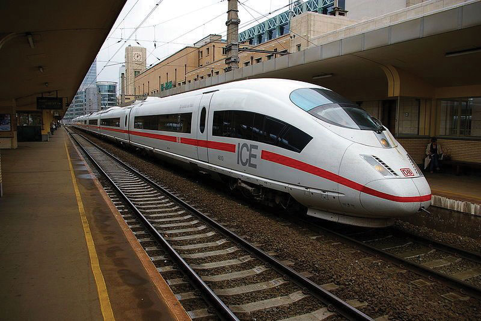Brussels is connected to other European cities through high-speed rail networks.
Source: Photo courtesy of Clicgauche, http://commons.wikimedia.org/wiki/File:Ice_bruxelles.JPG.
The European country of the Netherlands also includes the colonies of the Netherlands Antilles in the Caribbean. The Netherlands, sometimes called Holland, is actually the name of two provinces (North Holland and South Holland) in the northwest part of the country. The largest city is Amsterdam. The Hague is the seat of government and is home to the United Nations International Court of Justice. Rotterdam is located at the mouth of the Rhine River and is one of the busiest ports on the continent. The country is famous for its Zuider ZeeThe area enclosed by the most famous artificial sea wall or levee in the Netherlands that restricts the North Sea., which is the large inland region below sea level that has been drained of water and surrounded with an extensive dike protecting it from the North Sea. Reclaiming land from the sea in areas called poldersDry land reclaimed from the sea in the Netherlands. has provided this densely populated country with more land area for its people to expand their activities.
For a small country with few natural resources, the Netherlands has an impressive GDP. The Dutch have made good use of their location on the North Sea and of the location of several large navigable rivers. This has facilitated voluminous exports to the inland parts of Europe. The major industries include food processing, chemicals, petroleum refining, and electrical machinery. The Netherlands is a top exporter of agricultural products, which contribute substantially to its economy. Dutch agricultural exports consist of fresh-cut plants, flowers, and bulbs as well as tomatoes, peppers, and cucumbers.
The main languages spoken in the small landlocked country of Luxemburg are French, German, and Luxembourgish. Luxembourg’s one major city is Luxembourg City. Luxemburg has an enviable economic situation with a stable and prosperous economy, low unemployment, and low inflation. Thanks to rich iron-ore deposits, this country was able to develop a very robust steel industry, which was the cornerstone of the nation’s prosperity until the 1970s. As steel declined, Luxemburg remade itself as an important world financial center. Luxembourg leads Europe as the center for private banking and insurance industries and is second only to the United States in terms of being an investment fund center.
France covers 211,209 square miles and is the second-largest European country; Ukraine is slightly larger in physical area. The physical landscapes of France vary widely from the northern low-lying coastal plains to the Alpine ranges of the east. Mont Blanc, the highest mountain in the Alpine range at 15,782 feet, is located in France near the Italian border. In the far south, the Pyrenees run along the border with Spain. The south-central region of the country is home to the Massif Central, which is a plateau and highland region made up of a large stretch of extinct volcanoes.
During the colonial era, France was a major naval power and held colonies around the world. The French Empire was the second largest at the time. The French language is still used for diplomacy in many countries. Though the French Empire no longer exists, France has progressed into a postindustrial country with one of the most developed economies in the world. It is a major player in European affairs, the EU, and the United Nations (UN). France is a democratic republic that boasts a high-quality public education system and long life expectancies.
Figure 2.22
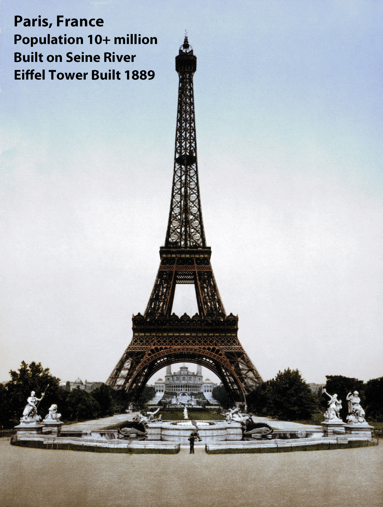The Eiffel Tower, a symbol of the primate city of Paris, was built in 1889. The city of Paris started as a citadel on an island in the middle of the Seine River.
Source: Photo courtesy of the Library of Congress.
In 2010, France’s population was about sixty-five million, with about ten million living in France’s primate city of Paris. The city of Paris is on an excellent site, it is favorably situated with regard to its surrounding area. It is a major core area of France serving a large peripheral region of the country. The next largest city of Lyon, which is a major high-tech industrial center for Europe’s economy, can only boast a population of about 1.4 million. Even with a large population, the country is able to produce enough food for its domestic needs and for export profits. France leads Europe in agricultural production.
France enjoys a robust economy and is one of the world’s leading industrial producers. Its industrial pursuits are diverse, including the manufacture of planes, trains, and automobiles, as well as textiles, telecommunications, food products, pharmaceuticals, construction and civil engineering, chemicals, and mechanical equipment and machine tools. Additionally, defense-related industries make up a significant sector of the economy. France’s production of military weapons is recognized worldwide. The country has been a leader in the use of nuclear energy to produce electricity. Nuclear energy supplies about 80 percent of the country’s electricity, which reduces the need for fossil fuels and imported oil.
Agriculture is an important sector of the French economy, as it has been for centuries, and is tied to industry through food processing. Food processing industries employ more people than any other part of the French manufacturing sector. If you think of cheese and wine when you think of France, you have identified two of its largest food processing endeavors, along with sugar beets, meats, and confectionaries. World-renowned wines are produced in abundance, sometimes in areas that bear their names, such as in Burgundy, around the city of Bordeaux, and in Champagne in the Loire Valley. French cuisine and fashion have long been held in highest esteem worldwide and are a source of national pride. Food and wine are important elements of the French way of life, and each region of France boasts a suite of famous dishes.
Thanks to the climate and favorable soil conditions, agriculture is highly productive and lucrative for France. France is second only to the United States in terms of agricultural exports. Exports mainly go to other EU countries, to the United States, and to some countries in Africa. The plains of northern France are excellent for wheat, which is grown on vast agricultural operations. Dairy products are a specialty in the western regions of France, which also produce pork, poultry, and apples. Beef cattle are raised in the central portion, where a cooler, wetter climate provides ample tracts of grasslands for grazing. Fruit, including wine grapes, is grown in the central and southern regions, as are vegetables. The region around the Mediterranean is blessed with hot, dry weather ideal for growing grapes and other fruits and vegetables.
French governments have been challenged by the country’s high unemployment rates. In response to decades of high unemployment, the French government has, over time, introduced legislation to try to distribute available work more evenly among the population. Long periods of unemployment and underemployment put France at risk of developing a permanent underclass, along with the social ills, including crime and political unrest, that come with it. The unemployment rate continues to be higher for women, and women tend to have lower-paying jobs. Additionally, women are underrepresented in government. France has a significant immigrant population, which means that, as in many countries with newcomers, the settlement and integration of new arrivals is an issue. Some have blamed the high youth crime rate not just on unemployment but on governmental failure to fully integrate immigrants into French society.
Another demographic matter is a strong rural-to-urban shift. As people move to the cities, rural areas are significantly depopulated. Though more than seventy languages are spoken in France due to its large immigrant population, French has been recognized as the official language by law. Eighty percent of French people identify themselves as Roman Catholics, though the percentage of practicing Catholics is much lower and declining. Approximately one-third of Europe’s Jewish population resides in France. About 5 percent of the population self-identifies with Islam, which is a growing population because of immigrants from North Africa, some of whom are Muslim and tend to have larger families. Most of these immigrants target the urban areas in search of employment and opportunity.
In 1995, France experienced three terrorist attacks, which killed eight people and wounded more than a hundred. The attacks were, of course, troubling, but the real issue before France is how to ensure that it does not become a breeding ground for Islamic extremists bent on terrorist activity. The situation of unemployed, disenfranchised youth can provide the perfect setting from which to attract new terrorist recruits. After decades of dealing with this type of unrest, France passed laws in response to the 1995 Islamic terrorist bombings that some civil libertarians found unsettling. Many forms of surveillance are legal and routine, including forms of surveillance that violate private communications. France also passed a law prohibiting “association with wrong-doers involved in a terrorist enterprise.” This gives French authorities the right to arrest, detain, try, and convict anyone suspected of any crime that might be even remotely related to terrorist activity. Balancing civil liberties with the quashing of terrorist plans has become a constant challenge for many countries, including France.
Germany’s location in Central Europe has meant that throughout history many peoples—all with their own cultures, ideas, languages and traditions—have traversed Germany at one time or another. Thus Germany’s culture has received many influences over the centuries.
Germany’s present geopolitical configuration is quite young, as it reunified the eastern and western portions into a single entity in 1990. Germany was formed in 1871 during the leadership of Otto von Bismarck in an attempt to create a Germanic power base. World War I was fought during the last years of the German Empire. Germany, as part of the Central powers (Germany, Austria-Hungary, and Bulgaria), was defeated by the Allies with much loss of life. The German Republic was created in 1918 when, having been defeated in World War I, Germany was forced to sign the Treaty of Versailles.
In 1933, with an environment of poverty, disenfranchisement of the people, and great instability in the government, Germany gave way to the appointment of Adolf Hitler as chancellor of Germany. Within a mouth of taking office, Hitler suspended normal rights and freedoms and assumed absolute power. A centralized totalitarian state quickly resulted. In a move to expand Germany, Hitler started to expand its borders. Germany’s invasion of Poland in 1939 kicked off what would become World War II. In 1941, Germany invaded the Soviet Union and declared war on the United States. After Germany’s defeat, the country was divided into East Germany, controlled by the Soviet Union, and West Germany, controlled by the Allied powers. The Iron Curtain divided the two Germanys, with the Berlin Wall dividing the city of Berlin. The Iron Curtain and the Berlin Wall were major symbols of the Cold War. In 1989, the Berlin Wall came down, and the two Germanys were reunited in 1990. Today, Germany is a vibrant country and an active EU member.
Figure 2.23 President Ronald Reagan Speaking at the Brandenburg Gate, Germany, June 12, 1987
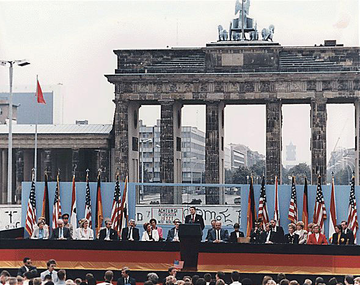From this speech comes his famous quote, “Mr. Gorbachev, tear down this wall.”
Source: Photo courtesy of Ronald Reagan Presidential Library, http://commons.wikimedia.org/wiki/File:ReaganBerlinWall.jpg.
Germany is Europe’s largest economy, with strong exports of manufactured goods. To gain national income, Germany has promoted manufacturing as a major component of its economy. Most exports are in automobiles, machinery, metals, and chemical goods. Germany has positioned itself strategically to take economic advantage of the growing global awareness of environmental issues and problems by focusing on improvements and manufacturing of wind turbines and solar power technology. The service sector also contributes heavily to the economy. Deutsche Bank holds the enviable position of being one of the most profitable companies on the Fortune 500 list. Germany is also a major tourist destination. The Black Forest, Bavaria, the Alpine south, a variety of medieval castles, national parks, and a vibrant assortment of festivals such as Oktoberfest attract millions of tourists to Germany every year.
German reunification in 1990 posed some challenges for the economy. Notably, the East German infrastructure was far behind that of the West. In an effort to update transportation systems, telecommunications, and other areas needed to support industry and commerce, enormous amounts of money had to be poured into the system. While there has been considerable success in the renewal of infrastructure, unemployment in former East Germany is still significantly higher, and the necessary retraining of the workforce is ongoing and expensive.
Language, religion, and education have been strong cultural forces in Germany. German is the official language of the country and the one spoken by most of its people. More than 60 percent of Germans self-identify as Christian, and another 30 percent self-identify as agnostic or atheistic. During the Cold War, East Germany was under a Communist government that promoted a nonreligious ideology, resulting in a high percentage of people with agnostic or atheistic beliefs in that part of Germany. Historically, there has been a strong connection between the religious reformation and education. The early leaders of the Christian Reformation were generally highly educated themselves and were strong advocates of education, which they viewed as a path to positive moral and social reform. The German tradition of excellence in education continues. Education is provided at no cost (other than taxation) to students at all levels, including the university level, though some universities are now starting to charge very modest amounts for tuition.
Landlocked in the center of Europe are the two main states of Switzerland and Austria. Sandwiched on the border of these two states is the ministate of Lichtenstein. This region is dominated by the Alpine ranges. Switzerland, officially known as the Swiss Confederation, is divided into twenty-six cantons (states). Because of its location and close ties with neighboring countries, four languages are spoken in Switzerland: German, French, Italian, and Romansh. Typically, one language predominates in any given canton. Berne is the country’s capital, and Geneva, Zurich, and Basel are the other major cities. As of 2010, Switzerland’s population was about 7.8 million. Its land area is just slightly larger than the US state of Maryland.
Internationally, Switzerland is well known for its political neutrality. The UN European offices are located there. The Red Cross and the main offices of many international organizations are located in Switzerland. Switzerland joined the UN in 2002 and has applied for EU membership. Swiss culture is thought to have benefited from Switzerland’s neutrality. During times of war and political turmoil, creative people found refuge within the Swiss borders. Swiss banking practices and policies are known throughout the world, and Swiss banks have benefited greatly from the country’s politically neutral status. Banking is one of the country’s top employers and sources of income. The Swiss people enjoy a high standard of living.
Sports are popular in Switzerland and football, or soccer, is popular as it is in much of Europe. Switzerland has also produced excellence in hockey, skiing, and of late, tennis. There is an emphasis on science in Swiss culture with good historical reason: the field of modern chemistry originated in Switzerland. The Bernoulli family, famed for their significant contributions to mathematics over many years, hails from Basel. The Federal Institute of Technology in Zürich, one of the top-ranked universities in the world, has produced an unusually high number of Nobel Prize winners. Albert Einstein, though born in Germany, relocated to Switzerland and later became a Swiss citizen.
Figure 2.24 Einspaenner Coffee
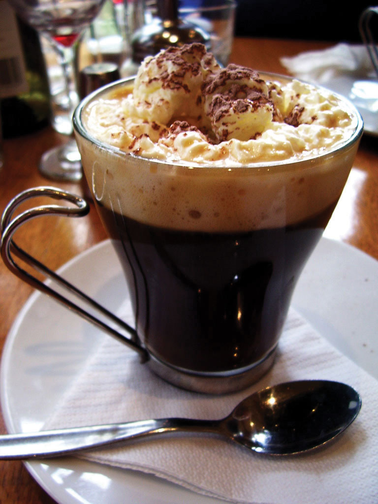A Viennese specialty, it is a strong black coffee served in a glass and topped with whipped cream; it comes with powdered sugar, which is served separately.
Source: Photo courtesy of Lachlan Hardy, http://www.flickr.com/photos/lachlanhardy/146178586.
Austria is larger than its neighbor Switzerland and is similar in area to the US state of South Carolina. In 2010, the population was estimated at 8.4 million. Austria has various Alpine ranges, with the highest peak at 12,457 feet in elevation. Only about a fourth of the land area is considered low lying for habitation. The Danube River flows through the country, including the capital city of Vienna. Austria has a well-developed social market economy and a high standard of living.
For more than six hundred years, beginning just before the dawn of the fourteenth century, Austria was tightly associated with its ruling dynasty, the Habsburgs. The Hapsburgs came to power in a new way with the formation of the Austrian Empire in 1804. In Germany’s rise to power before World War II, Hitler annexed his native Austria to Germany. Austria regained its independence a decade after the war ended and joined the EU in 1995. Austria is a German-speaking country, and nearly the entire population self-identifies as ethnic Austrian.
Austria is predominantly Roman Catholic and was home to many monasteries in the Middle Ages, influencing a strong Austrian literary tradition. Austria’s best-known cities are its capital of Vienna and Salzburg and Innsbruck. Vienna was the center of the Habsburg and Austrian Empires and earned a place as one of the world’s great cities. It is famed for its baroque architecture; its music, particularly waltzes; and theater. The Habsburgs were great patrons of the arts, and hence music, drama, and art thrived for centuries in Austria. The country has been home to many famous composers and musicians and is the setting for the story behind the movie The Sound of Music. Austria has a worldwide reputation in music and the arts.
The British Isles are an archipelago (group of islands) separated from the European mainland by the English Channel. The British Isles are often included in the region of Western Europe when discussing political geography; however, the fact that they are separated from the mainland of Europe by water provides them with a separate identity. The British Isles consists of two separate, independent countries: the Republic of Ireland and Great Britain. The United Kingdom (UK) of Great Britain consists of the regions of England, Scotland, Wales, and Northern Ireland. All four regions are now under the UK government. The Republic of Ireland is independent of the United Kingdom and does not include Northern Ireland. The primate city and UK capital is London, which is a financial center for Europe. The capital city of the Republic of Ireland is Dublin.
Figure 2.25 London on the Thames River
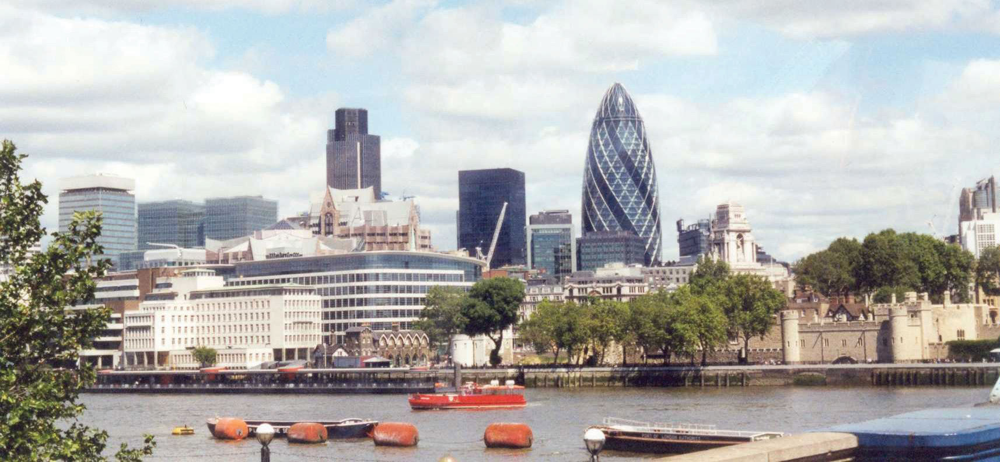Source: Photo by R. Berglee.
Influenced by the Gulf Stream, the climate of the British Isles is moderate, in spite of its northern latitude location. The UK and Ireland are located above the fiftieth degree of latitude, which is farther north than the US-Canadian border. The northern latitude would normally place this region into the type D climates, with harsher winters and more extreme seasonal temperatures. However, the surrounding water moderates temperature, creating the moderate type C climate that covers most of the British Isles. The Gulf Stream pulls warm water from the tropics and circulates it north, off the coast of Europe, to moderate the temperature of Western Europe.
The Western Highlands and the Northern Lowlands dominate the islands. Scotland, Wales, and parts of England have highland regions with short mountains and rugged terrain. The lowlands of southern England, Ireland, and central Scotland offer agricultural opportunities. The Pennines mountain chain runs through northern England and was the source of the coal, ores, and waterpower that fueled the Industrial Revolution. To the east of Britain is the North Sea, which provided an abundance of petroleum resources (oil) for energy and wealth.
Though the heritage of the British Isles is unique to this region, the geographic dynamics are similar to Central Europe—that is, smaller families, urbanization, industrialization, high incomes, and involvement with economic globalization. The EU has had an enormous influence on the British Isles. Ireland has embraced EU’s economic connections, but the British people have been hesitant to relinquish full autonomy to the EU. This reluctance can be noted in the fact that the United Kingdom kept the British pound sterling as their currency standard after the euro currency was implemented. However, the Republic of Ireland converted to the euro currency.
The regions of the British Isles follow similar dynamics to those of other countries in Western Europe. Though some regions are not as wealthy as others, they all demonstrate a high level of industrialization, urbanization, and technology. These urban societies have smaller families and higher incomes and are heavy consumers of energy, goods, and services. Just as the Industrial Revolution attracted cheap labor, the aging workforce has enticed people from former British colonies to migrate to the United Kingdom in search of increased employment opportunities. The mix of immigrants with the local heritage creates a diverse community. London has diverse communities with many ethnic businesses and business owners.
Devolutionary forces are active in the United Kingdom. Scotland and Wales are already governing with their own local parliaments. Devolutionary cultural differences can be noted by studying the different heritages found in each region. Just as the Welsh language is lingering in Wales, Gaelic continues in Ireland and Scotland. Each region has made efforts to retain local heritage and rally support for its own nation-state. However, this is all done with the overall perspective of remaining under the umbrella of the EU.
Figure 2.26
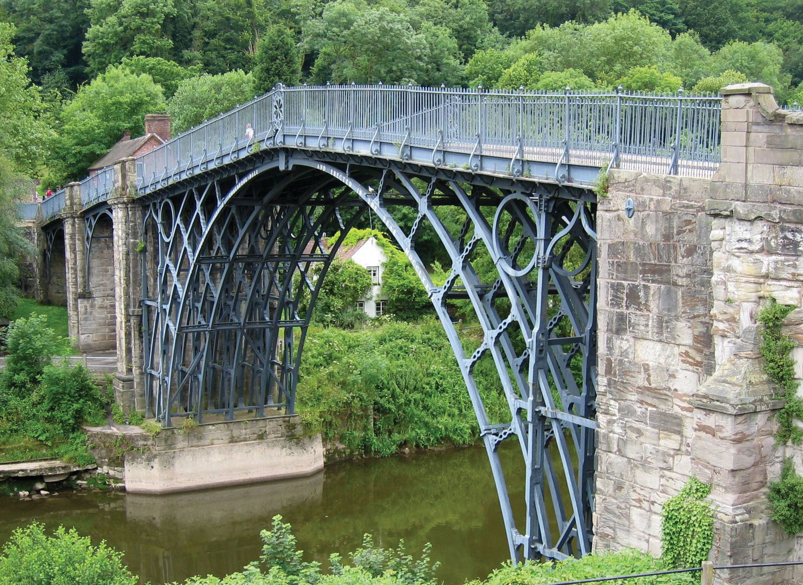The first iron bridge ever built (1879) was located in central England, home of the Industrial Revolution.
Source: Photo courtesy of Roantrum, http://commons.wikimedia.org/wiki/File:Ironbridge_6.jpg.
Home to the Industrial Revolution, major industrial cities such as Manchester and Birmingham brought together the labor, raw materials, and industry connections necessary to manufacture products. The port city of Liverpool gave access to the world markets established by Britain’s extensive colonial empire, and the colonies provided raw materials, new ideas, and cheap labor for the new industrial factories. Great Britain was an avid colonizer and controlled colonies on all inhabited continents. Raw materials such as cotton, which did not grow well in Britain, became a major import that fueled the textile mills of the Industrial Revolution.
Industrialization caused a rural-to-urban shift in Britain. In 1800, only 9 percent of the population lived in urban areas, but by 1900 some 62 percent resided in cities and towns. As of 2010, over 90 percent of Britain’s population is composed of urban dwellers. The British colonial empire also caused a migration pattern whereby people moved from colonies to the home country, with the core area located in the Midlands of northern England. Cheap immigrant labor and resources from the colonies provided the manufacturing enterprises of wealthy British industrialists with good fortunes. Raw cotton was brought in from the colonies of India and Egypt. Cheap labor, brought in from the Caribbean and South Asia, resulted in a more diverse population in the industrialized northern England.
As the information age developed, the industrial centers of northern England gave way to a postindustrialized southern England. The north’s heavy industries experienced a decline in demand. Factories closed, production became automated, and unemployment increased. The transition from the Industrial Revolution to a postindustrial society turned northern England into the Rust Belt of the British Isles. The port of Liverpool has been updated with modern and automated systems that do not require the high level of manual labor that was necessary during earlier industrial times. Rail service connects Liverpool with London, which is connected to Paris through a tunnel under the English Channel called the ChunnelThe tunnel under the English Channel connecting Great Britain with France..
The postindustrial economic activities have shifted the focus of employment away from manual labor to the service sector of information. Many places have looked to tourism to boost their economic situation. Northern England has many attractive physical environments that have been developed into major tourist attractions. The Lake District of northern England is a noted vacation destination, and short mountains and scenic landscapes attracted a number of England’s writers. The city of Blackpool on the Irish Sea, just north of Liverpool, is a major vacation destination for the English. The dales and moors of northern England, complemented by the short Pennines, provide a sharp contrast to the urban metropolitan landscapes of London and southern England.
Anchored by the primate city of London, southern England also is home to the universities of Oxford and Cambridge. This is Great Britain’s most affluent region and is a center of postindustrial activity. Located on the Thames River, London is a central player in the world economic markets. Southern England also houses about one-third of the UK population. With immigration from the former colonies, this region is also becoming more diverse. This is an urbanized region, where the cost of living, transportation, and housing is high. For example, the price of gasoline in the United Kingdom might be two or three times that in the United States. Many urban dwellers do not own automobiles but instead use public transportation.
England is the most populous region of the United Kingdom with a density of about one thousand people per square mile. About half the population increase is because of immigration. The UK population is aging as a result of smaller family sizes and a growing number of senior citizens. This trend is common in countries in stage 5 of the index of economic development. Immigrants from many parts of the world have targeted the England as their new home. Many are from former British colonies in Asia and Africa. England has a diverse population. Islam is the fastest growing religion, even though Muslims make up less than 10 percent of the total population. London is even home to a growing Sikh community.
Figure 2.27 London and the Seat of British Parliament
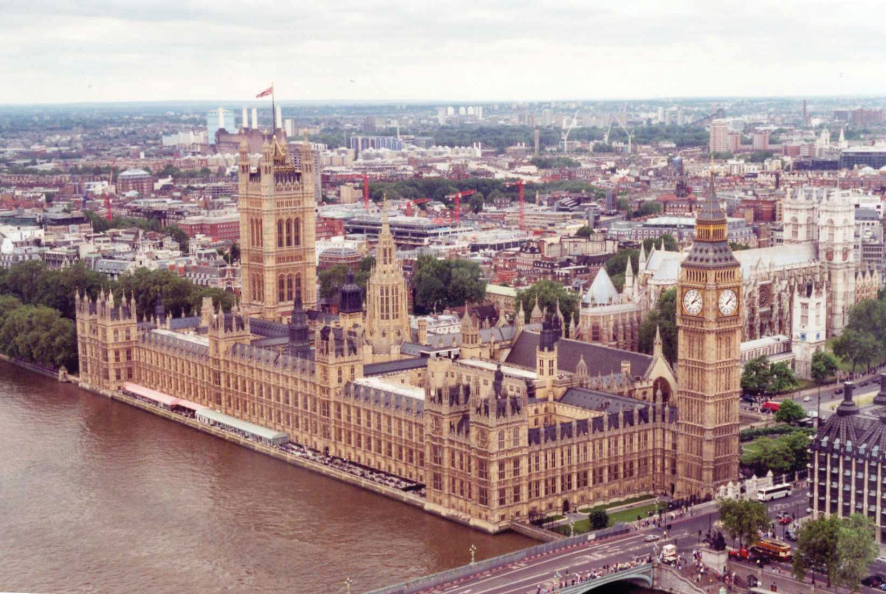The clock tower of Big Ben is a local landmark.
Source: Photo by R. Berglee.
London is not only the primate city and capital of the United Kingdom; it is the largest administrative municipality in the entire EU. Only Paris has a larger overall metropolitan area. London is a global center that holds prominence in world markets and the globalization process. About one-fifth of Europe’s largest corporations have their headquarters in London. The city’s cultural influence is felt around the world in the fashion industry, media, entertainment, and the arts. London is an international city that has a powerful draw for tourists. The core economic region of Europe is anchored by London’s international recognition.
Southern England is also home to Great Britain’s seat of government The UK government is considered a constitutional monarchy with a king or queen as head of state. The parliament is the official legislative body with a prime minister as head of government. The parliament has two bodies: the House of Commons, whose members are elected, and the House of Lords, whose members are appointed for life. As head of state, the monarch is mainly a figurehead with little actual political power. A number of dependencies remain under the British Crown as far as sovereignty is concerned. Small islands such as Guernsey, Jersey, the Isle of Man, and various islands in the Caribbean and Atlantic and Pacific Oceans remain under the British government for administrative, economic, and defense purposes.
A highland region to the west of England, Wales holds a Celtic heritage in which the Welsh language and stories of coal mining can still be heard. However, the English language has become more dominant and tourism has replaced coal mining as the main economic activity. The decline in the use of coal depressed the economy but did not depress the culture and heritage of the Welsh people. The largest city and capital of Wales is Cardiff. In the early twentieth century, the port of Cardiff handled the largest amount of coal in the world and handled more tons of cargo than Liverpool or London. The decline in coal mining has reduced the shipping activity in the port of Cardiff in the twenty-first century.
Devolution is alive and well in Wales. Welsh nationalism prompted the declaration of a separate parliament in the capital of Cardiff. The break with London provided local autonomy, but Wales is still reliant on the United Kingdom in national and foreign affairs. Many of the young people in Wales emigrate to find work because of the depressed economy. Emigration has caused a leveling off of population growth, and the number of people who speak Welsh has diminished. Wales and England share a common Protestant Christian religion. Wales is turning to tourism as a means of economic income; the scenic and picturesque landscape of the highland region, with its many castles, provides a pleasant experience for tourists.
United with England in 1707, Scotland has been integrated into the United Kingdom while keeping its separate heritage and culture. Scotland has strong centripetal forces uniting the Scottish people, including victories over the British by Scottish clans lead by William Wallace in 1297 and Robert the Bruce in 1314; these forces within Scotland have created a devolutionary split with the UK parliament. In the quest to become a nation-state unto itself, in 1997 Scotland received permission to create its own parliament to govern local affairs. Though Scotland would like to separate into an independent state, they do not wish to isolate themselves from the EU or greater Europe. This contradictory trend, in which local states want autonomy and self-rule yet also want to remain within the larger regional community for economic and national security, is common. The phrase “separate within the Union” is surfacing in Europe with stronger voices. For now, Scotland remains under the British Crown and shares a Protestant Christian heritage with its UK associates.
The Scottish Highlands provide for livestock production, and the central Scottish Lowlands are favorable for agriculture. The North Sea has extensive oil resources. With resources such as these, Scotland is in a position to gain wealth and support its small population of about five million people. As an early export product, scotch whisky has profited many whisky marketers and has become the largest export product of Scotland. Scotland benefited and gained wealth during the Industrial Revolution. As a part of an island, early shipbuilding produced ships that brought about trade and development that coincided with European colonialism.
Postindustrial activities have become a focus of the current economy. High-tech computer industries have concentrated in Silicon Glen, an information-age industrial sector that lies between Scotland’s largest city, Glasgow, and its capital of Edinburgh. With natural resources and postindustrial opportunities, Scotland is in a good position to compete in the global economic community. Scottish banking firms reach around the globe through their investment holdings. Scotland attracts a healthy tourism market with its Highlands and many castles. Kilts and bagpipes are a part of Scottish history and often distinguish themselves as a part of the region’s heritage. The game of golf originated in Scotland and is still popular today.
Northern Ireland is a place in which strong cultural forces often erupt into violence. Officially part of the United Kingdom, this small region with about 1.7 million people has developed a unique set of cultural problems. Most people consider the religious differences to be the main problem in Northern Ireland. People of Irish heritage are predominately Roman Catholic, and those of Scottish and English heritages are usually Protestant Christians. But it is not so simple. If the troublesThe term used in the United Kingdom for the political conflict in Northern Ireland. (as they are called in the United Kingdom) in Northern Ireland were based solely on religion, then we should expect to see similar violence in other regions of the United States or of Europe.
The core of the cultural problems in Northern Ireland is actually based on political affiliations. Most of the population in the region is not Irish. About 55 percent of the population is of Scottish or English descent, with only about 45 percent of Irish descent. The real problem centers on the governing of Ireland. The Irish would like to see Northern Ireland join with the Republic of Ireland, which received its independence from the British in 1921. The Irish do not want to be under the UK parliament with the Queen of England as head of state. Irish countrymen want total independence from the United Kingdom. The non-Irish population does not want to be a part of the Republic of Ireland and its Irish parliament and would rather remain under the British Crown. The people of Scottish descent would prefer total independence from all outside forces. English people definitely want to remain with the UK parliament.
Figure 2.28 Protestant Group in a Belfast Parade Celebrating King William of Orange
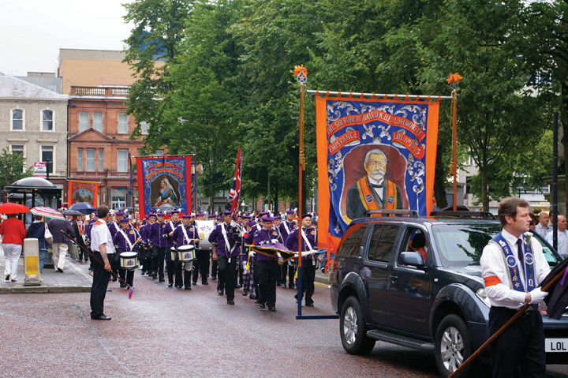Source: Photo courtesy of Irish Fireside, http://www.flickr.com/photos/irishfireside/2307812326.
Though the real problem is political, religion has become the scapegoat. Because cultural differences can be clearly witnessed between Catholics and Protestants, religion has become the identifier of the two sides. They are not necessarily fighting over religious beliefs but rather over political power and control.
The troubles of Northern Ireland have diminished its economic and employment opportunities. Underground paramilitary groups such as the Irish Republican Army (IRA) have heightened tensions between the two groups for decades, with car bombings and other terrorist acts. Hope might lie with a generational change in the population. As the younger generation seeks more opportunities and advantages, the issues that separate the two sides could diminish. The hatred that has been built up over the years can be eased with each new generation if centripetal forces work to bridge the differences and unite the social fabric. If the killing and hatred are passed down to successive generations, it will only take longer to recover.
In 1998, after a series of terrorist acts that were condemned on all sides, a movement took place to create the Northern Ireland Assembly with members of both sides of the division. Obstacles continue to surface to disrupt this calming process, but there is hope that in the future solutions such as this assembly can work toward producing a lasting peace. The devolutionary forces active in Wales and Scotland may act to create a more separate Northern Ireland. The Northern Ireland Assembly was only one step. Progress in Northern Ireland is an uphill battle with high unemployment, a poor resource base, and few economic opportunities. Only by working together will Northern Ireland become a stable, peaceful part of the British Isles.
The whole island of Ireland was under the control of the British Crown for centuries. In 1921 independence was gained from the British for all but Northern Ireland. This bitterly fought conflict has become well entrenched in Irish culture and literature. As an independent country separate from the United Kingdom, the Republic of Ireland has ascended the economic ladder to become a part of the global economic community. Because the climate is type C, there is adequate rainfall for crops and vegetation, and the green landscape gives it the title, “The Emerald Isle.” The island has few other natural resources. There are trees but no large forest reserves for commercial exploitation. Peat, which is an early version of coal, is cut from the bogs and burned as fuel.
Ireland is not a large country. It is just a bit larger than the US state of West Virginia, with a population of about four million. There are no tall mountain ranges in Ireland. The soils are traditionally rocky with few nutrients. Before colonial times, the traditional food crops included such turnips and rutabagas. When the potato was imported from the Americas, it was well received in Ireland. The potato plant grew well and replaced traditional root crops as the main food source.
In the early 1800s the population of the whole of Ireland (including what is now Northern Ireland) was as high as eight million. Starting in the 1840s, blight and rot destroyed much of the potato crop year after year, causing a serious famine in Ireland. More than a million people died, and another two million people left the island. The potato famine caused losses reminiscent of the Black Death, which had ravaged Europe centuries earlier. The history of the Black Death may have led to the term Black Irish, which referred to people who fled Ireland during the potato famine and immigrated to the United States. They were often regarded as lower-class citizens and were discriminated against. Well-established Irish families having immigrated to the United States before the 1840s were not considered Black Irish and assimilated into mainstream American society more easily.
The lack of natural resources and the lack of opportunities and advantages held back the Republic of Ireland from developing a strong economy. It wasn’t until the 1990s that conditions improved. With the creation of the EU and advancements in communication, Ireland became an ideal location for expanding North American corporations. The attractive elements included a mild climate, a similar English language, an educated workforce, and a low cost of living. Many high-tech computer firms, communication companies, and automated industries established their base of operations in Ireland—Dublin in particular. Because Ireland was a member of the EU, it was a convenient intermediary location between the United States and the European mainland. Business boomed in the 1990s, and incomes and the cost of living rose. Tourism also has become a growing sector of the economy. The economic growth in Ireland earned it the title Celtic Tiger to indicate its growing economic power.
However, the rapidly expanding economic conditions of the 1990s have not extended into the twenty-first century. Since 2007, the global depression has taken its toll on the Irish economy. Starting in 2008, the country witnessed a sharp increase in unemployment that coincided with serious banking scandals. Various banks have been targeted for bailout funds from the government, and the economy witnessed a sharp decline. Property values have plummeted, and protesters have staged demonstrations in the streets demanding the government address the economic situation. Tourism has taken up some of the slack and has expanded by highlighting the Emerald Isle’s mild climate and green countryside. Cities such as Dublin are working with the growing pains of recovery in the economic recession. Unemployment remains a concern, as well as declining economic opportunities. Overall, Ireland is working to reposition itself for future economic growth. The country wants to maintain itself as an important link in the EU’s relationship with the United States. Ireland is bracing itself for a sluggish economic road ahead.
Identify the following key places on a map: